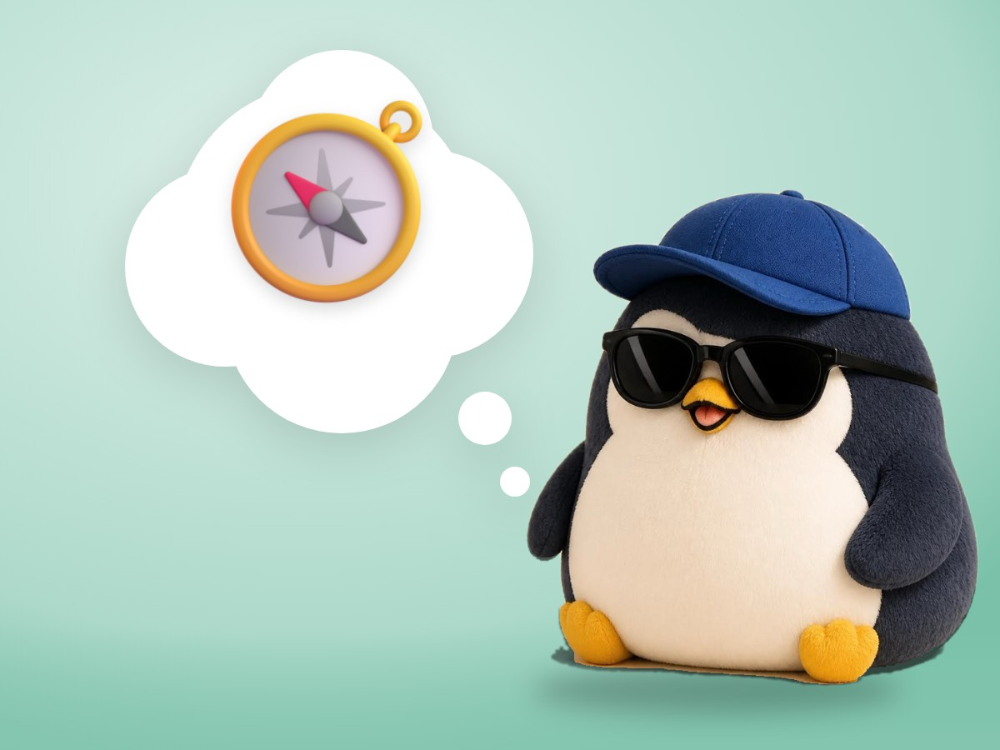

🐧 EVERYDAY LIFE⚡ 21 SEC
You can decide your own score by yourself 🧭

The One Voice
Even if 10 people praise you, if 1 person says something bad, you only think about that.
Who Decides
That is because you let other people decide your score.
⚡ TRY IT
Who decides your score?
10 💖 and 1 💢. Tap a button above.
😣 10 good voices… but only the 1 bad voice looks big.
🧭 The crowd is still there. But the score is yours.
📋 MY SCORECARD
⚾ Today: I struck out 3 times. But I swung hard every time.
My score:
Tap the stars. You decide. 👆
🙂 OK. That is your score.
😊 Nice. You decided it.
🌟 5 stars! Decided by you, not by them.
✅ Decided by: me
Your Score
You can decide your own score by yourself.
This is not the same as being selfish.
Hit Or Out
Some days you get a hit but are not happy, and some days you strike out but are happy.
📚 I learned this from the Japanese blog "Panda no Ondo".
PREVIOUS POST
The more you avoid something, the harder it becomes